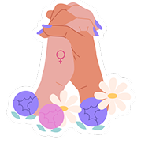

Formulário
Responda algumas perguntas e descubra qual serviço é ideal para a sua necessidade.
ResponderEscolha um caminho abaixo. Você pode voltar aqui quando quiser, no seu tempo.

Responda algumas perguntas e descubra qual serviço é ideal para a sua necessidade.
ResponderLocalize delegacias e centros de apoio perto de você para buscar ajuda ou registrar uma ocorrência.
Ver postos próximosEncontre psicólogas, advogadas e outras profissionais que atendem gratuitamente.
Conhecer a redeDesabafe e troque apoio com outras mulheres, de forma anônima e com moderação.
Entrar na rodaPasso a Passo
Um lugar para desabafar e se apoiar entre mulheres. Você entra com um apelido, sem mostrar seu nome ou e-mail.
Nunca compartilhe seu endereço, telefone ou dados de outras pessoas na roda.
Entrar na rodaProfissionais com registro verificado que doam seu tempo para acolher você.
Todos os atendimentos realizados são voluntários e, portanto, 100% gratuitos pelo tempo que durarem.
Você decide quando iniciar o atendimento, respeitando o prazo de 15 dias para o primeiro contato. Caso queira interrompê-lo por qualquer motivo, você também terá essa liberdade.
Seus dados estão seguros conosco. Priorizamos a sua privacidade e utilizamos medidas de segurança para garantir a proteção das suas informações.